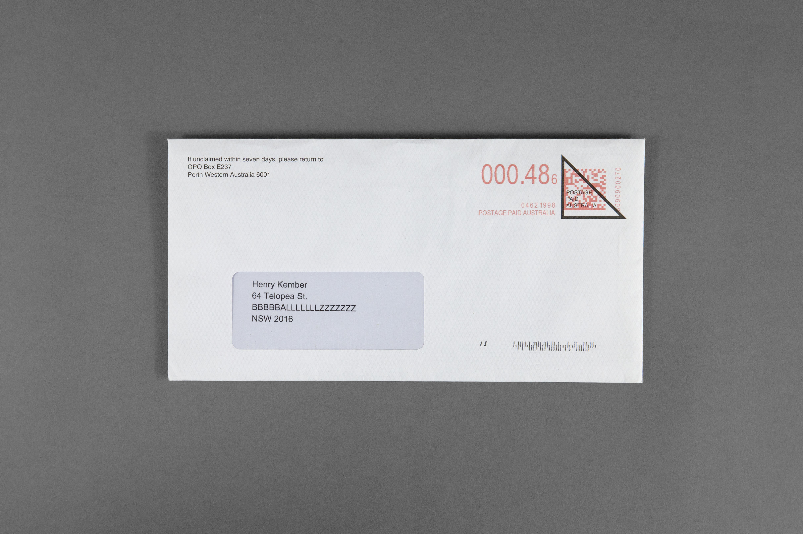
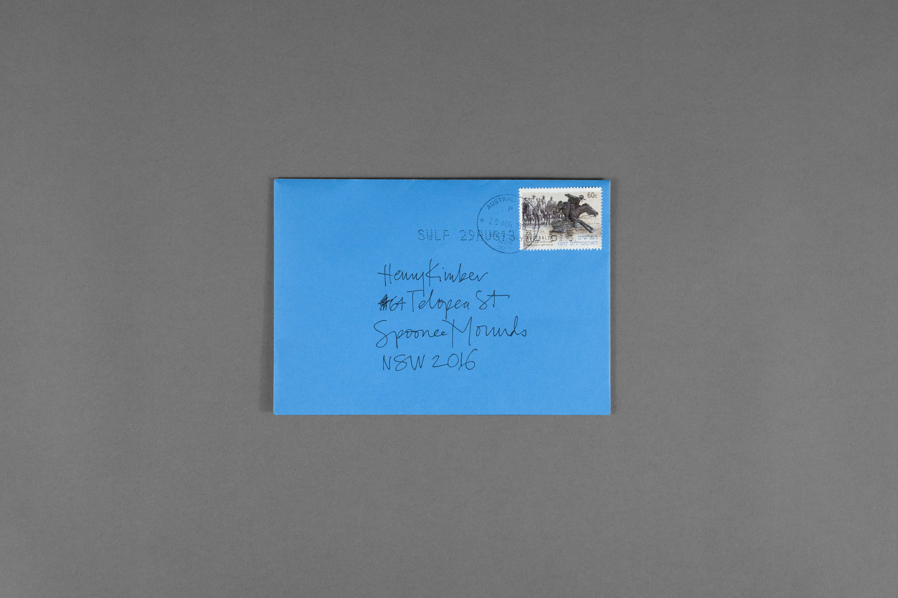

Henry Kember
CD/Writer
YOU CAN
TAKE YOUR
SUBURB
Personal
Project
I used to live on the border of two suburbs: Surry Hills and Redfern. When people asked where I lived, I said 'East Surryfern'. One day I signed up for a mailing list using this name, and what do you know, it still works. Next, I thoroughly tested what kind of suburb names would and wouldn't reach my street address. Turns out they all worked.

- 
- 
Henry Kember 2016